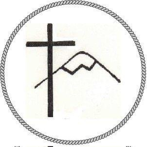

Cultos, celebraciones y vida comunitaria
Abril — Diciembre 2026
Este calendario refleja los cultos dominicales en nuestras seis comunidades y la vida activa de nuestra iglesia a lo largo del año. Todos son bienvenidos.